Polecenia w konsoli
ipconfig – polecenie służące do wyświetlania konfiguracji interfejsów sieciowych.
Zwalnia i
aktualizuje dzierżawy DHCP oraz wyświetla, rejestruje i usuwa nazwy DNS. Narzędzie pomocne przy wykrywaniu
błędnego adresu IP, maski podsieci lub bramy domyślnej.
Polecenie to wywołane z parametrem:
-
/all - wyświetla pełną informację o interfejsach sieciowych
- /renew - odnawia
wszystkie dzierżawy adresu z DHCP
- /release - odnawia wszystkie dzierżawy adresu z DHCP
-
/? lub / - wyświetla komunikat pomocy
- /flushdns - czyści bufor
programu rozpoznającego nazwy DNS
- /displaydns - wyświetla zapamiętane tłumaczenia DNS na
adresy IP

ipconfig /all 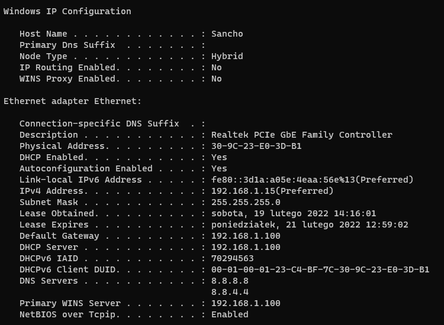
ipconfig /release 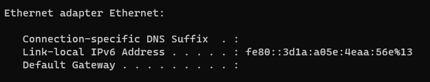
ipconfig /renew 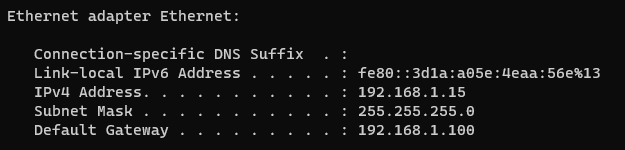
ipconfig /? 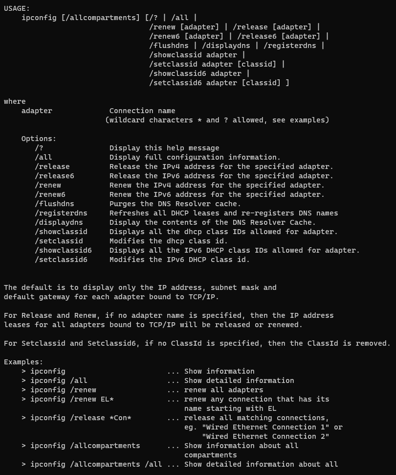
ping – polecenie używane w sieciach komputerowych TCP/IP i służące do diagnozowania połączeń sieciowych. Pozwala na sprawdzenie, czy istnieje połączenie pomiędzy hostami testującym i testowanym. Umożliwia on zmierzenie liczby zgubionych pakietów oraz opóźnień w ich transmisji, zwanych lagami. Polecenie to wywołane z parametrem -t wysyła żądania do momentu ręcznego przerwania tego procesu za pomocą CTRL+C
tracert – program służący do badania trasy pakietów w sieci IP. Polecenie to znajduje również zastosowanie w sprawdzeniu, czy na trasie przesyłania pakietów wszystkie routery i łącza działają prawidłowo
Lokalizacja: USA - San Francisco, California 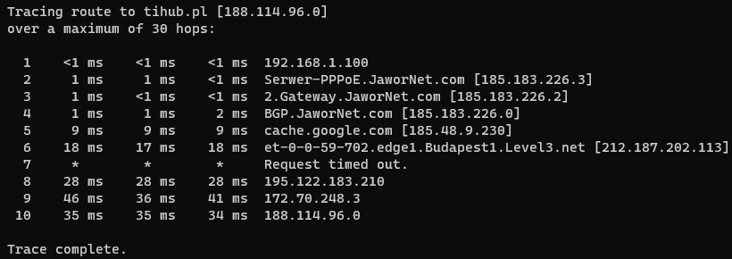
tracert wp.pl
Lokalizacja: Polska - Warszawa, Mazowieckie 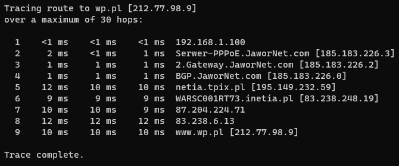
tracert cloudflare.com
Lokalizacja: Kanada - Toronto, Ontario 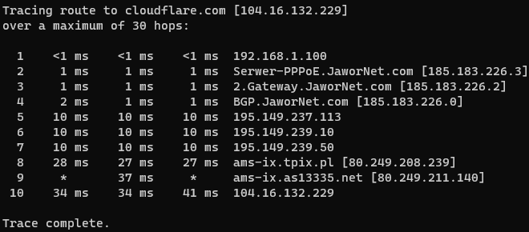
pathping - polecenie łączące funkcjonalność polecenia ping oraz tracert. Na początku ustalana jest trasa między dwoma hostami a następnie pingowany jest każdy z węzłów na tej trasie
Lokalizacja: USA - San Francisco, California 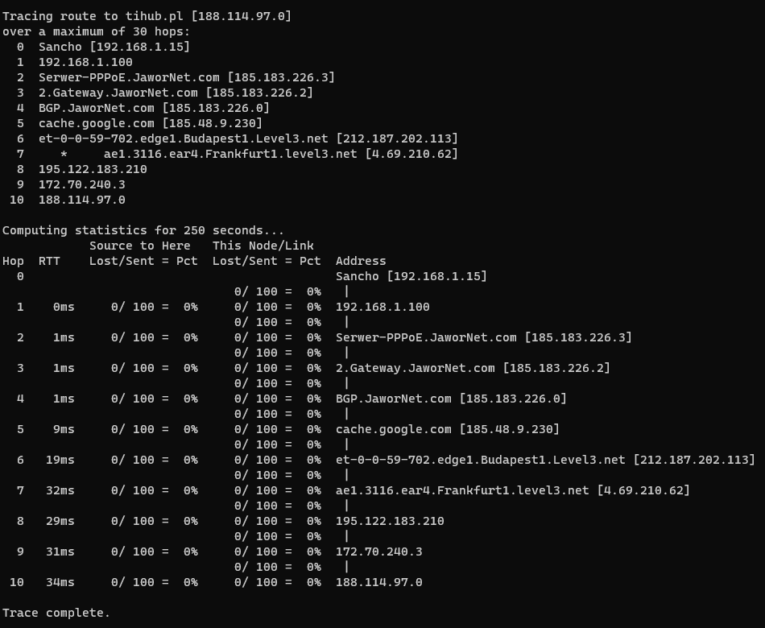
pathping wp.pl
Lokalizacja: Polska - Warszawa, Mazowieckie 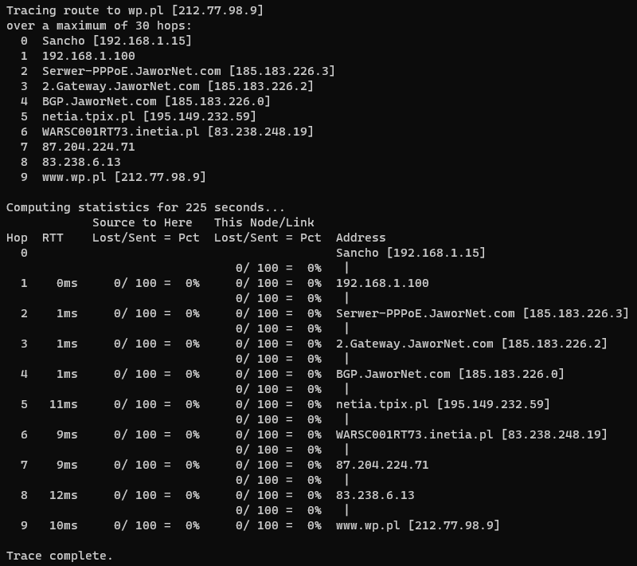
pathping cloudflare.com
Lokalizacja: Kanada - Toronto, Ontario 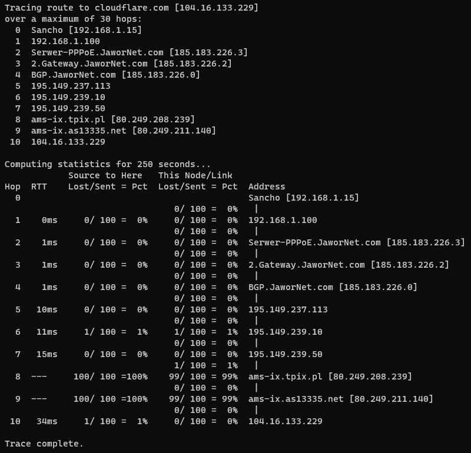
arp - wyświetla i modyfikuje wpisy w pamięci podręcznej ARP (Address Resolution Protocol), która zawiera jedną lub kilka tabel używanych do przechowywania adresów IP i odpowiednich rozpoznanych adresów fizycznych Ethernet lub Token Ring. Dla każdej karty sieciowej Ethernet lub Token Ring zainstalowanej na komputerze dostępna jest oddzielna tablica. Polecenie arp bez parametrów wyświetla pomoc.
wyświetla urządzenia w sieci lokalnej, z którymi komunikował się komputer, rekordy do tablicy ARP dopisywane są też automatycznie przez system operacyjny, istnieje również opcja ręcznego ich dopisywania 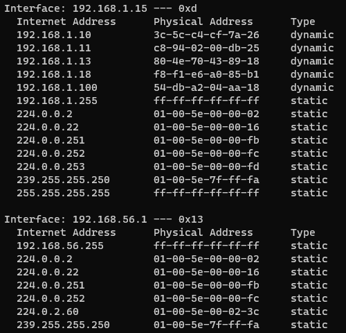
Jeżeli chcielibyśmy dodać do tablicy wpis informujący o tym, że urządzenie o adresie 10.0.2.200 ma adres MAC AA-BB-CC-DD-EE-FF, wykonujemy polecenie arp -s 10.0.2.200 aa-bb-cc-dd-ee-ff
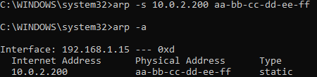Po wykonaniu polecenia arp -d zostaną usunięte wszystkie wpisy ARP
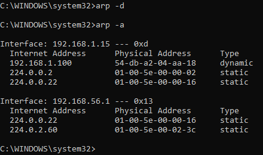netstat - służy do wyświetlania aktywnych połączeń sieciowych TCP a także: portów, na których komputer nasłuchuje, tabeli trasowania protokołu IP, statystyki sieci Ethernet, statystyki protokołu IPv4 (dla protokołów IP, ICMP, TCP i UDP), statystyki protokołu IPv6 (dla protokołów IPv6, ICMPv6, TCP przez IPv6 i UDP przez IPv6) oraz połączeń NAT i komunikatów netlinkowych. Polecenie netstat użyte bez parametrów powoduje wyświetlenie aktywnych połączeń protokołu TCP. Polecenie to wykonane z parametrem -e wyświetla statystyki wysyłanych i odebranych pakietów, bardziej szczegółowe dane można pozyskać z parametrem -s. Można tym poleceniem również pozyskać tablicę routingu wykonując polecenie z parametrem -r
netstat -e 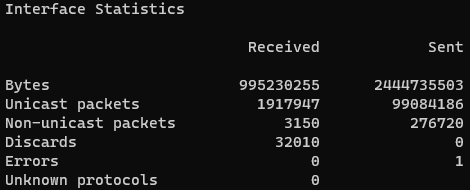
netstat -s 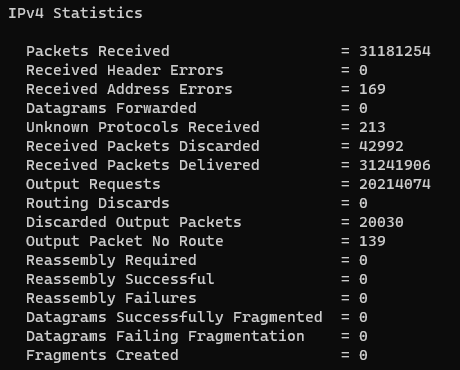
netstat -r 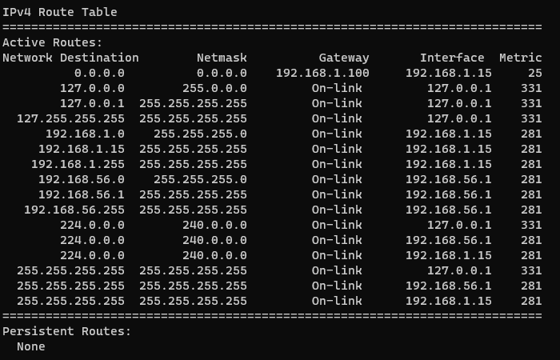
netsh - umożliwia lokalną lub zdalną konfigurację urządzeń sieciowych, takich jak interfejs. Program ten jest uruchamiany poleceniem netsh. Interfejsy sieciowe można wyświetlić poleceniem interface show interface
Zmiana adresu IP, maski, bramy i DNS na statyczne 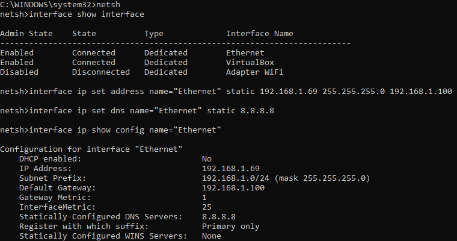
Zmiana adresu IP, maski, bramy i DNS na dynamiczne 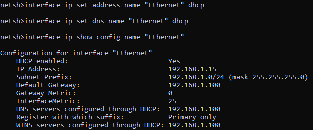